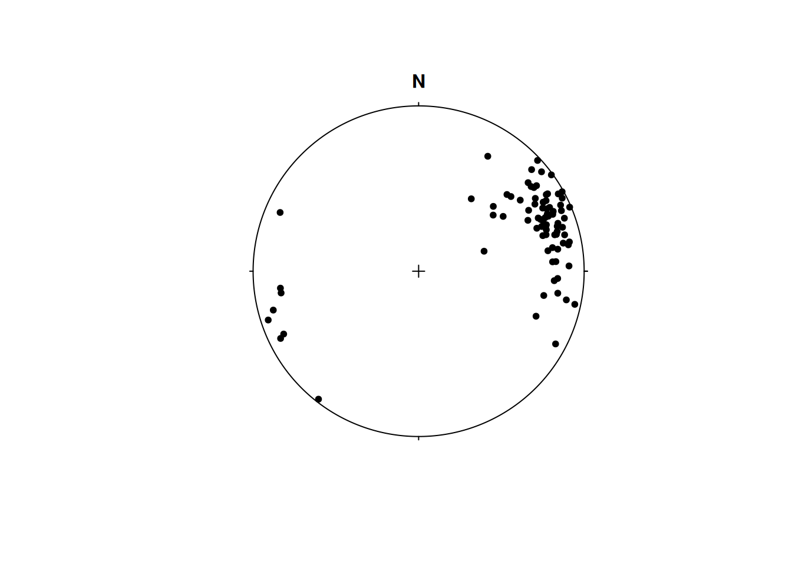
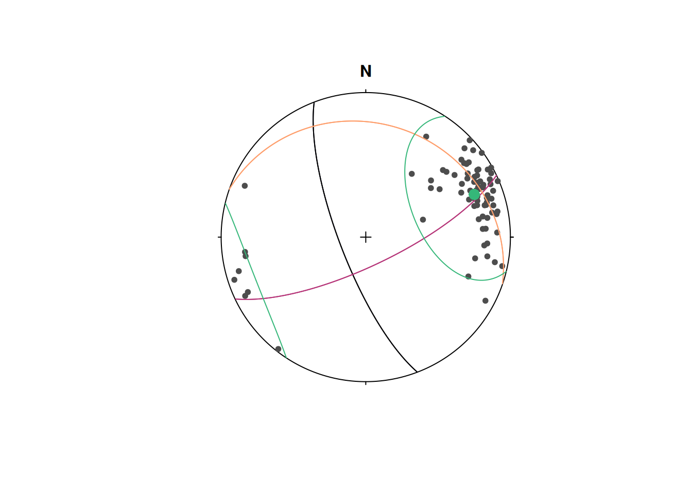

install.packages("devtools")When working with orientation data you must:
- Define the type of orientation data you have measured
- Figure out what you want to do
- Describe the orientation data
- Visualize your findings
Prerequisites
Before you start you need to have R and an R-compatible IDE installed on your computer:
You will need R installed on your computer. You can download R from the CRAN website: https://cran.r-project.org/
Once you downloaded and successfully installed R, you can use R in your preferred IDE. I recommend installing and using RStudio. However, Positron and Visual Studio Code are also great alternatives. You can also use R’s native GUI or use R in your terminal only.
Open your IDE and first install the {devtools} package to later install {structr} from my GitHub repository:
- Now you can install the {structr} package by typing the following code into the console. This will install the package and every required library as well.
devtools::install_github("tobiste/structr")- Finally, you must “load” the library to use the functions of {structr}:
Import
The first thing you usually need to do is importing your orientation data. This can be done in several different ways depending on your preferences. For example, RStudio has a GUI that allows you to import data without using R commands (File > Import Dataset).
You can also use one of the functions below to import data:
read.table("path/to/my/file.txt", header = TRUE, sep = "\t")
read.csv("path/to/my/file.csv")
readxl::read_xlsx("path/to/my/file.xlsx")To use your data directly from a StraboSpot project, download the JSON file and import it using the read_strabo_JSON() function.
read_strabo_JSON("path/to/my/file.json")This returns a list which contains all the information and metadata (including coordinates, descriptions etc.) extracted from the StraboSpot project in the list element data, the tags used for the project in the list element tags, and the linear and planar orientation measurements in the list elements linear and planar, respectively.
Data type declaration
Depending on the symmetry of the orientation data, different data types are used to represent orientations in 3D space. The main data types used in structural geology are Rays, Lines, Planes, Pairs, and Faults. Distinguishing these data types is important because the different symmetries imply different statistical assumptions for their distribution. In other words the different data types require different statistical “treatments”. To learn more about it, follow this tutorial.
The data types can be generated using the object creator functions: Vec3(), Line(), Plane(), Ray(), Pair(), and Fault(). These functions create spherical objects, and {structr} will identify the symmetry nature of the data in further function calls.
Equal-area projections
The spherical objects can be plotted in equal-area projections using R’s primitive plotting functions, e.g. plot(), points(), and lines():
# import some example lines
data(example_lines)
# plot lines in an equal-area projection
plot(example_lines)
More details on plotting spherical data in https://tobiste.github.io/structr/articles/Plots.html
Statistical estimators
There are plenty of different statistical parameters, whose meaningfulness depends on the underlying distribution of the orientation data (and hence also on the symmetry of the data).
# Spherical arithmetic mean
lines_mean <- sph_mean(example_lines)
print(lines_mean)
#> Line object (n = 1):
#> azimuth plunge
#> 68.51277 20.49587
# Spherical arithmetic variance
sph_var(example_lines)
#> [1] 0.2168518
# Spherical standard deviation
lines_sd <- sph_sd(example_lines)
print(lines_sd)
#> [1] 40.06063Here, the spherical arithmetic mean and variance are computed. These values conveniently describe the distribution if we assume a unimodal, rotationally symmetric distribution such as the von Mises-Fisher distribution, the analogue of the normal distribution for vectorial (ray-like) data; for axial (line-like) data, the Watson and Bingham distributions play this role. In many cases the geodesic mean and variance better describe the distribution of vectors. More details in the statistics tutorial.
Orientation tensor
The orientation tensor describes the distribution of all vectors in your dataset.
ortensor(example_lines)
#> Orientation tensor
#> [,1] [,2] [,3]
#> [1,] 0.16204564 0.2552464 0.08096582
#> [2,] 0.25524643 0.7382838 0.19306540
#> [3,] 0.08096582 0.1930654 0.09967054Eigenvalues and eigenvectors of this tensor describe the distribution.
Summarize the statistical parameters in an equal-area projection:
# plot the data
plot(example_lines, col = "grey30")
# great circles associated with the eigenvectors
lines(lines_eigen$vectors, col = c("#000004FF", "#B63679FF", "#FE9F6DFF"))
# spherical mean and standard deviation cone
points(lines_mean, pch = 16, cex = 1.5, col = "#35B779FF")
lines(lines_mean, ang = lines_sd, col = "#35B779FF")
Here, the eigenvectors are the intersections of the great circles (each great circle is normal to one eigenvector and contains the other two). Note how the spherical mean is quite similar to one eigenvector (the one associated with the greatest eigenvalue).